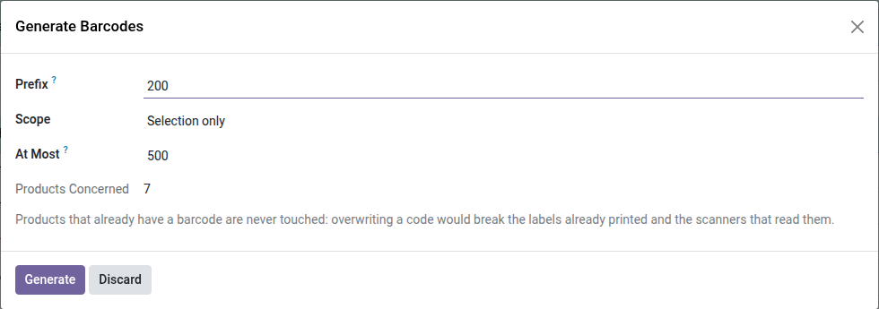
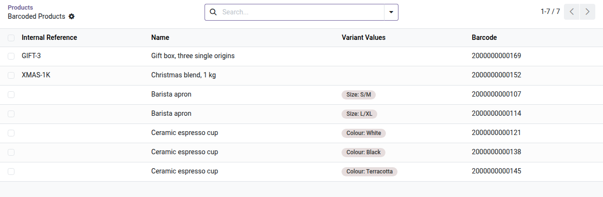

Assign valid EAN13 codes to every product that has none, in one go.
Odoo can validate a barcode and compute its check digit; it cannot generate one. A catalog of a thousand items without codes is therefore filled in by hand, one product after another, with all the typos that implies — and a wrong code only shows up when the scanner rejects the label, at receipt or at the checkout.
Four products checked in the list, seven variants concerned: the count is shown before anything is written, with the prefix and the safety cap.

The wizard returns what it has just assigned, variant by variant, with the code itself: complete EAN-13s, check digit included, after the numbers already in use.

Assigning codes is the prerequisite; putting them to work comes next. The OdooSkills range covers barcode scanning for warehouse operations, lot and serial number tracking, and the barcode-driven shop floor screen. Full catalog: apps.odooskills.com.
LGPL-3 license — compatible with Odoo 18.0 Community and Enterprise. Support: apps@odooskills.com.